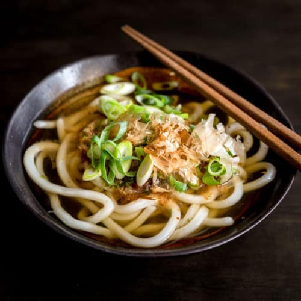

Udon Noodle Soup

Original Dish Owner
This is the first dish that I made by myself without the help of anyone else
The lightness of the soup and udon makes this the perfect dish for any occasion
- Udon Noodles
- Hotpot Beef
- Chicken Stock
- Vegetables
- Cook udon is boiling water combined with chicken stock
- Add vegetables into boiling water after 2 minutes have passed
- Add hotpot beef and cook for 1 minute before taking out to serve
Homepage